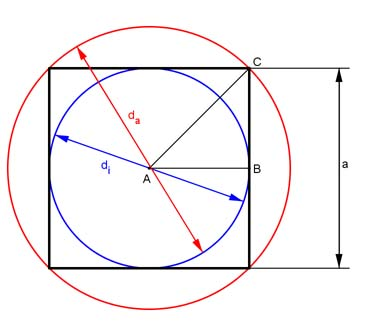

Aufgabe 319 Einem Würfel mit der Seitenlänge a ist eine Kugel ein- und eine umbeschrieben. In welchem Verhältnis stehen ihre Volumina und ihre Oberflächen zueinander?  Volumen: Würfel: VW = a³ Innere Kugel: di = a d³ * л a³ * л Vi= --------- = --------- 6 6 Äußere Kugel: Satz von Pythagoras im Dreieck ABC: AC² = AB² + BC² AB = AC = a/2 a² a² 2 * a² a² AC² = (a/2)² + (a/2)² = ---- + ---- = -------- = ---- |√ 4 4 4 2 a AC = ---- = ra √2 2 * a da = 2 * ra = ------- = √2 * a √2 л * da³ л * (√2 * a)³ л * 2 * √2 * a³ л * √2 * a³ Va = ---------- = ----------------- = ------------------ = ------------- 6 6 6 3 VW a³ 1 л ---- = --------- = ------ oder VW : Vi = 1 : --- = 1 : 0,523 Vi a³ * л л 6 -------- --- 6 6 VW a³ 1 л * √2 ---- = --------------- = ---------- oder VW : Va = 1 : ---------- = 1 : 1,48 Va л * √2 * a³ л * √2 3 -------------- -------- 3 3 a³ * л ---------- Vi 6 1 ---- = --------------- = --------- oder Vi : Va = 1 : 2 * √2 = 1 : 2,828 Va л * √2 * a³ 2 * √2 ------------- 3 VW : Vi : Va = 1 : 0,523 : 1,48 Oberfläche: Würfel: OW = 6 * a² Innere Kugel: Oi = л * di² = л * a² Äußere Kugel: Oa = л * da² = л * (√2 * a)² = л * 2 * a² OW 6 * a² 1 л ---- = -------- = --- oder OW : Oi = 1 : --- = 1 : 0,523 Oi л * a² л 6 --- 6 OW 6 * a² 1 л ---- = ------------ = --- oder OW : Oa = 1 : --- = 1 : 1,047 Oa л * 2 * a² л 3 --- 3 Oi a² 1 ---- = -------- = --- oder Oi : Oa = 1 : 2 Oa 2 * a² 2 OW : Oi : Oa = 1 : 0,523 : 1,047